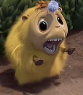

Katie is a small yellow yak, and follows Horton around as one of the children of Whoville. Her prominent features are her large eyes, which are often misaligned, and her tendency to open her mouth widely and make strange sighing sounds.
Katie appears in the animated movie, Horton Hears a Who!, produced by Blue Sky Studios. Katie was not part of the original Horton Hears a Who! book by Dr. Suess, but is a welcome auxiliary character in the animated movie.
Source Repository